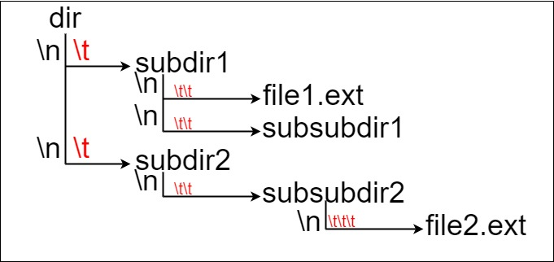
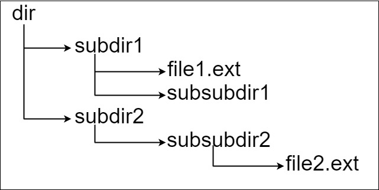

Suppose we have a file system that stores both files and directories. An example of one system is represented in the following picture:

Here, we have dir as the only directory in the root. dir contains two subdirectories, subdir1 and subdir2. subdir1 contains a file file1.ext and subdirectory subsubdir1. subdir2 contains a subdirectory subsubdir2, which contains a file file2.ext.
In text form, it looks like this (with ⟶ representing the tab character):
dir ⟶ subdir1 ⟶ ⟶ file1.ext ⟶ ⟶ subsubdir1 ⟶ subdir2 ⟶ ⟶ subsubdir2 ⟶ ⟶ ⟶ file2.ext
If we were to write this representation in code, it will look like this: "dir\n\tsubdir1\n\t\tfile1.ext\n\t\tsubsubdir1\n\tsubdir2\n\t\tsubsubdir2\n\t\t\tfile2.ext". Note that the '\n' and '\t' are the new-line and tab characters.
Every file and directory has a unique absolute path in the file system, which is the order of directories that must be opened to reach the file/directory itself, all concatenated by '/'s. Using the above example, the absolute path to file2.ext is "dir/subdir2/subsubdir2/file2.ext". Each directory name consists of letters, digits, and/or spaces. Each file name is of the form name.extension, where name and extension consist of letters, digits, and/or spaces.
Given a string input representing the file system in the explained format, return the length of the longest absolute path to a file in the abstracted file system. If there is no file in the system, return 0.
Example 1:

Input: input = "dir\n\tsubdir1\n\tsubdir2\n\t\tfile.ext" Output: 20 Explanation: We have only one file, and the absolute path is "dir/subdir2/file.ext" of length 20.
Example 2:
Input: input = "dir\n\tsubdir1\n\t\tfile1.ext\n\t\tsubsubdir1\n\tsubdir2\n\t\tsubsubdir2\n\t\t\tfile2.ext" Output: 32 Explanation: We have two files: "dir/subdir1/file1.ext" of length 21 "dir/subdir2/subsubdir2/file2.ext" of length 32. We return 32 since it is the longest absolute path to a file.
Example 3:
Input: input = "a" Output: 0 Explanation: We do not have any files, just a single directory named "a".
Example 4:
Input: input = "file1.txt\nfile2.txt\nlongfile.txt" Output: 12 Explanation: There are 3 files at the root directory. Since the absolute path for anything at the root directory is just the name itself, the answer is "longfile.txt" with length 12.
Constraints:
1 <= input.length <= 104inputmay contain lowercase or uppercase English letters, a new line character'\n', a tab character'\t', a dot'.', a space' ', and digits.